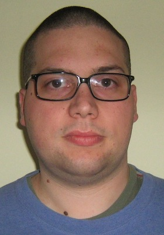

Eric Miotto
Crocetta del Montello -- Treviso (Italy)
Last updated on 2013-09-17 13:26:00 UTC
careers.stackoverflow.com/edymtt

Curriculum Vitae by Eric Miotto is licensed under a Creative Commons Attribution 3.0 Unported License.
Portfolio (beta)
http://stackoverflow.com/users/753737/edymtt
Summary
I'm a computer enthusiast for 13 years and a software developer with 4 years of experience.
I enjoy designing and writing clear, testable and maintainable applications; to achieve this I practice unit testing, I refactor ``legacy code'' and I employ object oriented and functional paradigms.
I'm well versed in exploring new technologies to assess their characteristics and the problems they pose in their adoption. I employ both theory and experience to deliver software in a successful fashion.
I strive to continually improve my skills, to apply best practices in my daily work and to keep myself up to date -- in this period I'm reading Peopleware, I'm refreshing algorithms theory and I'm exploring how to perform lengthy builds with continous integration servers.
I aspire to work as a Software Engineer or Software Engineer in Test (or equivalent roles), possibly on operating systems, compilers, developer tools or real-time/embedded systems.
Work experience
10/2009 -- : Programmer, BEDIN Shop Systems srl, Cornuda -- TV (Italy)
Development, maintenance and support of software for Points of Sale (.NET 3.5/4.0):
- development and (automatic) deployment of smart clients -- Windows Forms, SQL Compact, SQLite, Lucene.NET, ClickOnce
- development, deployment and monitoring of web services handling thousands of users -- WCF, Windows Azure, SQL Azure, Windows Azure Service Bus, ACS 2.0
- promotion engine; development of a library for video and photo acquisition from webcams (DirectShow); setup of a build server (Jenkins, MSBuild); development of a simple administration web site (ASP.NET MVC, Javascript, jQuery); migration of source code from Team Foundation Server to GitHub; fiscal printers programming; initial introduction of unit testing and automation practices
Summers from 2003 to 2008: Training -- apprentice programmer, BEDIN Shop Systems srl, Cornuda -- TV (Italy)
- Development and maintenance of software for Points of Sale management (.NET 2.0/3.5)
- Implementation of a visual editor for documents and labels made with GDI+, using a retained mode graphics system
- Investigation on WPF as an alternative to Windows Forms
Education and training
10/2007--09/2009: Laurea Specialistica (Master's Degree) in Computer Science, Università degli Studi di Padova, Padua (Italy), 110/110 cum laude
Online and approximate algorighms, concurrency, distributed systems, cryptography, semantics of programming languages, static analysis, data warehouse, business intelligence, multimedia, hypermedia, audio/video compression, bioinformatics, real-time systems, information retrieval, wireless networks, ITIL v2, abstract algebra, constraint programming, machine learning
10/2004--09/2007: Laurea Triennale (Bachelor's Degree) in Computer Science, Università degli Studi di Padova, Padua (Italy), 110/110 cum laude
Programming, algorithms, software engineering, relational databases, SQL , XML, probability, statistics, logic, operational research, programming languages, linear algebra, mathematical analisys, computer architectures, operating systems, networks, automata, numerical analysis, artificial intelligence, discreet mathematics, security
09/1999--06/2004: High School Diploma, Computer Specialization, Istituto Tecnico Industriale Statale Luigi Negrelli, Feltre -- BL (Italy), 100/100
Computer science (programming, operating systems, DBMS, boolean logic), mathematics (analysis, integral, derivatives), electronics (transistors, operational amplifiers, logical ports), statistics (probability, stochastics variables)
Skills
Further details at www.edymtt.io and careers.stackoverflow.com/edymtt
Methodologies
Object oriented paradigm, functional paradigm, design, profiling, distributed systems, compensation, bug tracking, single responsibility principle, unit testing, separation of concerns
Technologies
.NET (from 1.1 to 4.5), Visual Basic .NET, LINQ, C\#, async, NuGet, Java, C++, C, SQL (Transact SQL), Ruby, XML, regular expressions, Windows Forms, Windows Presentation Foundation (WPF), Windows Azure Compute (PaaS), Storage, Windows Azure Service Bus, Windows Azure Caching, ACS 2.0, Windows Azure Active Directory, Visual Studio 2003/2005/2008/2010/2012, Eclipse, SQL Server 2008/2008 R2, SQL Azure, SQL Compact 3.5, Sqlite 3, Subversion, Mercurial, Git, Team Foundation Server 2010, git-tfs, LLBLGen Pro 2/3/3.1, Entity Framework 4, Jenkins, MSBuild, Make, rake, Windows Communication Foundation (WCF), HTML 5, CSS, Javascript, ASP.NET, ASP.NET MVC, Fiddler, OAuth 2.0, Jekyll, Mac OS X, Linux (Ubuntu, Fedora, Debian), Windows, Android, Touch typist (Self-taught, QWERTY, mostly italian layout, about 47 words-per-minute), LaTeX, Markdown, Textile, Powershell, VMware Fusion, VirtualBox, ECDL, OData
Languages
- Italian
- Mother tougue
- English
- Fluent, Able to handle written and spoken technical conversations
According to the Common European Framework of Reference (CEF) level
- Understanding
- Listening: B2 -- Independent User
- Reading: A1 -- Independent User
- Speaking
- Spoken interaction: A2 -- Basic User
- Spoken prodution: A2 -- Basic User
- Writing: B1 -- Independent user
In real life:
- I can read easily technical and narrative articles/books;
- I can watch films, tv series and YouTube shows (sometimes with the help of subtitles)
- I can handle technical conversation -- I'm able to interact to technical support to explain the issues I'm having and I can understand what it is told to me.
Favorite sites
Bookshelf
- The Clean Coder
- The Mythical Man-Month
- Clean Code
- Modern Operating Systems (2nd edition)
- Peopleware (3rd edition)
- Switch
- How We Test Software at Microsoft
- How Google Tests Software
- The Clean Coder
University Theses
Masters thesis
- Title
- Challenges in the Integration of domain-specific and scientific bodies of knowledge in Model-Driven Engineering
- Supervisor
- Prof. Tullio Vardanega
- Outside examiner
- Prof. Gilberto Filè
- Description
- Technological investigation about problems and tools needed to introduce Model-Driven Engineering in the construction of software, in particular in the real-time field. The investigation was conducted within Eclipse (EMF, GMF, Papyrus).
Bachelors thesis (in Italian)
- Translated Title
- A high-available service oriented architecture
- Original Italian Title
- Un’architettura orientata ai servizi che offra alta disponibilità
- Supervisor
- Prof. Gilberto Filè
- Outside examiner
- Prof. Massimo Marchiori
- Industry supervisor
- Davide Bedin
- Description
- At BEDIN Shop Systems srl (Cornuda -- TV, Italy) development of a prototypal application for log transmission according to SOA principles using Windows Communication Foundation (WCF) and Amazon Simple Queue Service (SQS). For the development I used unit testing, integration testing and coverage report
Go to preamble (troubleshooting)
View commit history on GitHub